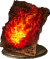
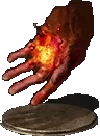
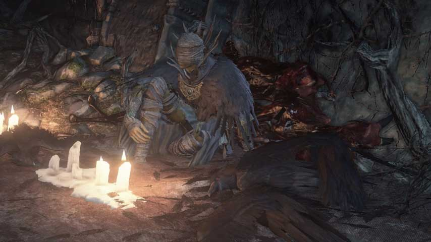
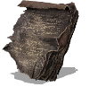

Pyromancy is the art of manipulating fire. The spells in the Pyromancy school are mostly offensive in nature with a few utility spells, ranging from thrown fire of all kinds to defensive and offensive character buffs and even a heal over time.
Pyromancies deal more damage the more points you have invested in the Intelligence and the Faith stats. Pyromancies will also have a required level of Intelligence and/or Faith in order to be able to cast them. Generally, stronger Pyromancies require a higher level of Intelligence and/or Faith in order to cast, however some Pyromancies have no requirements at all.
Pyromancies require a Pyromancy Flame in order to cast. Pyromancers automatically start with a Pyromancy Flame, and a Pyromancy Flame will be given to you if you talk to Cornyx of the Great Swamp for the first time in Firelink Shrine. Pyromancy Flames can be upgraded at Cornyx as well, using the regular Titanite upgrade materials.
Cornyx is an NPC that can be found locked in a cage on top of the building above the Cliff Underside bonfire in the Undead Settlement area. After you've talked to him and accepted his request to become your Pyromancy teacher, he will teleport to Firelink Shrine where you can talk to him once more to purchase new Pyromancies and upgrade your Pyromancy Flame.
Be on the lookout for Pyromancy Tomes. Bring these key items to Cornyx in Firelink Shrine and he will add a bunch of new Pyromancies to his inventory for you to buy.
